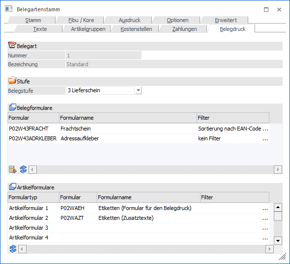
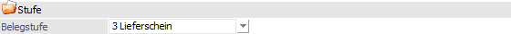
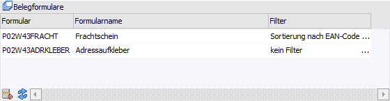
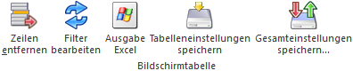
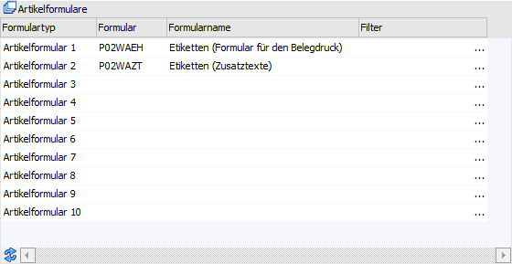
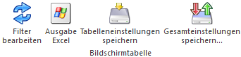

In dem Register "Belegdruck" kann gesteuert werden, welche Formulare zusätzlich zum "normalen" Formular noch gedruckt werden sollen.

Im oberen Teil des Fensters wird die Belegart angezeigt, welche gerade bearbeitet wird (Felder "Nummer" und "Bezeichnung").
Stufe

Ø Belegstufe
Aus der Auswahlbox kann gewählt werden, für welche Belegstufe die nachfolgenden Einstellungen gelten sollen. D.h. es können für jede Belegstufe unterschiedliche Zusatzformulare gedruckt werden.
Tabelle "Belegformulare"

In der Tabelle, welche beliebig lang werden kann, kann hinterlegt werden, welche zusätzlichen Formulare (neben dem "normalen" Belegformular) gedruckt werden sollen. Hierbei stehen in den Formularen die gleichen Variablen zur Verfügung stehen, wie beim "normalen" Belegdruck.
Ø Formular
An dieser Stelle werden die zusätzlichen Formulare hinterlegt. Über die Matchcodefunktion (F9-Taste) kann nach allen vorhandenen Formularen gesucht werden.
Ø Formularname
In dieser Spalte wird der Name des jeweiligen Formulars angezeigt,
Ø Filter
Zusätzlich zu den Formularen kann jeweils ein Filter pro Formular zugeordnet werden. Diese Filter können für Sortierung sowie Gruppierung verwendet werden; d.h. es kann damit NICHT selektiert werden!
Tabellenbuttons "Belegformulare"

Ø Zeilen entfernen
Durch Anklicken dieses Buttons können hinterlegte Formulare wieder gelöscht werden.
Ø Filter bearbeiten
Mittels Button "Filter bearbeiten" können neue Filter angelegt bzw. bestehende bearbeitet werden. Diese Filter enthalten die Variablen der Belegmitte und können für Sortierung und Gruppierung verwendet werden. Wird die Gruppierung mit Summenbildung im Filter verwendet, so müssen im auszudruckenden Formular die entsprechenden Flags = Gruppensummenflags (¹, ², ³, ª) dafür verwendet werden.
Ø Ausgabe Excel
Durch Anwahl des Buttons "Ausgabe Excel" wird der Inhalt der Tabelle an Microsoft Excel übergeben.
Ø Tabelleneinstellungen speichern
Die Spalten einer Tabelle können grundsätzlich an beliebige Positionen verschoben, bzw. in der Breite entsprechend angepasst werden. Durch Anwahl des Buttons "Tabelleneinstellungen speichern" werden die Einstellungen benutzerspezifisch gespeichert und bei dem nächsten Aufruf des Programmpunktes wieder vorgeschlagen.
Ø Gesamteinstellungen speichern
Im Gegensatz zu "Tabelleneinstellungen speichern" können mit "Gesamteinstellungen speichern" mehrere Tabellenaufbauten gespeichert und nach Wunsch geladen werden. Zusätzlich werden Sonderfunktionen der Tabelle (z.B. "Spalte gruppieren") ebenfalls bei der Speicherung bedacht.
Tabelle "Artikelformulare"

In der Tabelle kann entscheiden werden, welches Etikett bei welchem Artikelformular herangezogen werden sollen.
Ø Formulartyp
In dieser Spalte stehen 10 Formulartypen zur Verfügung, mit denen gesteuert werden kann, wann welches Formular gedruckt werden soll. Die Formulartypen stellen dabei Eigenschaften dar, d.h. die Bezeichnungen der Formulartypen können im Eigenschaftenstamm (WinLine START - Optionen - Eigenschaften) geändert werden (nähere Information zu der Verbindung "Artikelformular" und "Artikel" entnehmen Sie bitte dem Kapitel Artikel - Register "Zusatz").
Ø Formular
Im Feld Formular wird das Formular ausgewählt, welches gedruckt werden soll. Durch Drücken der F9-Taste kann nach allen vorhandenen Formularen gesucht werden.
Ø Filter
Zusätzlich zu den Formularen kann jeweils ein Filter pro Artikelformular in der Tabelle zugeordnet werden. Diese Filter können für Sortierung sowie Gruppierung verwendet werden; d.h. es kann damit NICHT selektiert werden!
Tabellenbuttons "Artikelformulare"

Ø Filter bearbeiten
Mittels Button "Filter bearbeiten" können neue Filter angelegt bzw. bestehende bearbeitet werden. Diese Filter enthalten die Variablen der Belegmitte und können für Sortierung und Gruppierung verwendet werden. Wird die Gruppierung mit Summenbildung im Filter verwendet, so müssen im auszudruckenden Formular die entsprechenden Flags = Gruppensummenflags (¹, ², ³, ª) dafür verwendet werden.
Ø Ausgabe Excel
Durch Anwahl des Buttons "Ausgabe Excel" wird der Inhalt der Tabelle an Microsoft Excel übergeben.
Ø Tabelleneinstellungen speichern
Die Spalten einer Tabelle können grundsätzlich an beliebige Positionen verschoben, bzw. in der Breite entsprechend angepasst werden. Durch Anwahl des Buttons "Tabelleneinstellungen speichern" werden die Einstellungen benutzerspezifisch gespeichert und bei dem nächsten Aufruf des Programmpunktes wieder vorgeschlagen.
Ø Gesamteinstellungen speichern
Im Gegensatz zu "Tabelleneinstellungen speichern" können mit "Gesamteinstellungen speichern" mehrere Tabellenaufbauten gespeichert und nach Wunsch geladen werden. Zusätzlich werden Sonderfunktionen der Tabelle (z.B. "Spalte gruppieren") ebenfalls bei der Speicherung bedacht.
Hinweise zu den Formularen
Für die Erstellung von Formularen, die in Abhängigkeit vom Artikel gedruckt werden, sind einige Punkte zu beachten:
ü Bei den Belegformularen können die gleichen Variablen verwendet werden, die auch beim "normalen" Belegdruck zur Verfügung stehen.
ü Wenn z.B. Artikeletiketten gedruckt werden, dann gibt es dafür Standardformulare (P02WAEH - Etiketten und P02WAE - Artikeletiketten), dass ebenso wie der "normale" Artikeletikettendruck mit einem SUB-Formular arbeitet.
ü Wenn pro Artikel z.B. eine Seite ausgegeben wird, so kann das erreicht werden, indem im Formular mit Flag N ein Seitenumbruch (VB-Formel "PageBreak") eingefügt wird.
ü Wenn unter "Belegformulare" oder "Artikelformulare" ein Formular hinterlegt wird, welches das PDI "P02W151" oder "P02W151H" aufweist, dann ersetzt dieses Zusatzformular das Formular der Verpackungsart beim Lieferscheindruck.